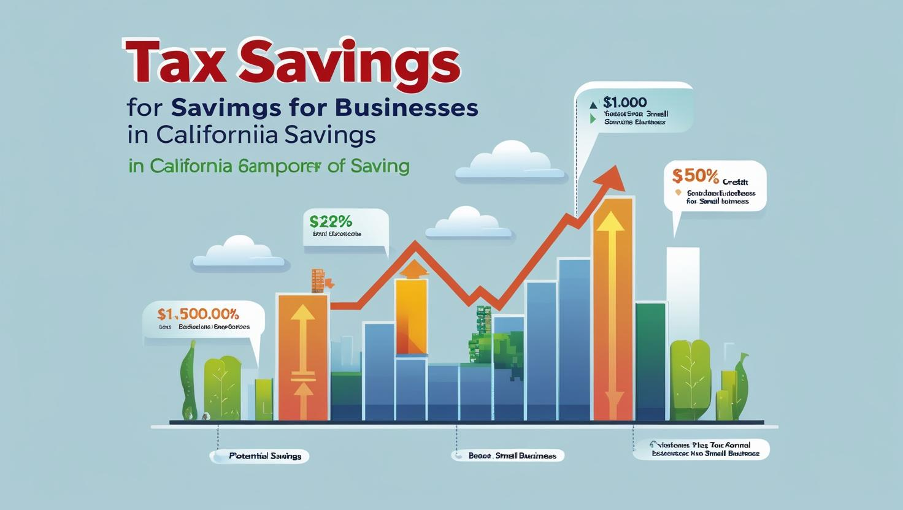

Running a small business is rewarding but financially complex. Many entrepreneurs struggle with bookkeeping, tax compliance, and financial planning—distracting them from growth. Hiring a Chartered Accountant (CA) isn’t just an expense; it’s a strategic investment that saves money, ensures compliance, and fuels scalability.
Here’s why your small business needs a CA—and how they deliver long-term ROI.
Small businesses often overpay taxes or face penalties due to filing errors. A CA:
Example: A CA helped a Mumbai-based e-commerce startup reduce its tax liability by 22% through R&D credits and GST input claims.
A CA doesn’t just track expenses—they eliminate waste:
Banks and investors demand accurate financial statements. A CA prepares:
Case Study: A Bengaluru SaaS firm secured ₹50L in funding after a CA restructured its financial model.
Entrepreneurs spend 120+ hours/year on accounting. A CA handles:
📊 Bookkeeping | 📅 Payroll | 📑 Compliance
Freeing you to focus on sales, product, and customers.
Small businesses are prime targets for fraud. A CA:
Red Flag: 45% of small business frauds are committed by employees.
A CA advises on:
A CA brings deep industry knowledge to guide decisions like:
Absolutely. CAs serve all kinds of clients — from street vendors to startups..
At least once every quarter, or monthly if you're growing rapidly.
Great! A CA can review your data, ensure compliance, and give strategic advice beyond software capabilities.
A Chartered Accountant is not just a tax expert—they are a growth partner for your business. With the right CA on your side, you gain more than just numbers—you gain clarity, direction, and control over your financial future.